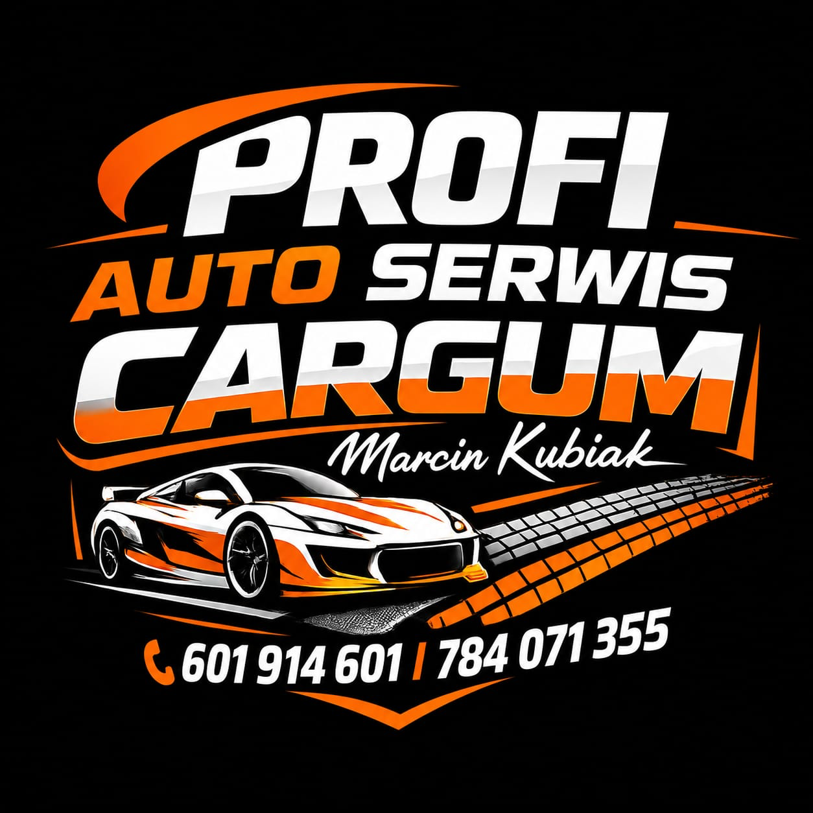

Naprawy mechaniczne, diagnostyka, klimatyzacja oraz opony i wulkanizacja - w jednym miejscu. Wycenę poznasz przed naprawą. Zadzwoń i umów termin.
Kliknij usługę, by poznać szczegóły.
Świeci check engine? Odczytamy błędy i wyjaśnimy po ludzku.
Zobacz →Klocki, tarcze, płyn. Bezpieczeństwo, na którym nie oszczędzamy.
Zobacz →Nabicie, odgrzybianie, wymiana filtra kabinowego.
Zobacz →Amortyzatory, wahacze, łożyska. Auto znów prowadzi się pewnie.
Zobacz →Olej, filtry, płyny, rozrząd. Plan serwisowy bez niespodzianek.
Zobacz →Sprzedaż, wymiana, wyważanie, naprawa i przechowywanie opon.
Zobacz →Mówisz, co się dzieje. Umawiamy termin.
Ustalamy przyczynę usterki.
Znasz koszt przed naprawą. Bez niespodzianek.
Oddajemy sprawne auto z gwarancją.
Osobowe i dostawcze: benzyna, diesel, LPG, hybrydy.
Mechanika i pełny serwis opon w jednym miejscu.
Zero ukrytych kosztów - akceptujesz, zanim zaczniemy.
Odpowiadamy za wykonaną pracę i montowane części.
Ocena 5,0 ★ z opinii w Google
„Miałem problem z silnikiem. Szybko zdiagnozowali i wykonali kompleksową naprawę. Marcin wszystko wyjaśnił. Zdecydowanie warto!”
„Kilku mechaników rozkładało ręce przy mojej klimatyzacji - tylko Cargum i Marcin znaleźli usterkę i wszystko wyjaśnili. Konkretna wycena i szybka naprawa.”
„Trafne diagnozy, pełen profesjonalizm, jasne ceny i świetna obsługa. Nasza Corsa dostała nowe życie. Dziękujemy Marcinowi i zespołowi Car-Gum!”
„Szybka naprawa Twingo, które nie odpalało. Wybrali najtańsze rozwiązanie. Szybko i skutecznie - auto odzyskało moc.”
„Auto zepsuło się tuż przed ważną podróżą. Przyjęli je z życzliwością, usterkę szybko zdiagnozowano i naprawiono. Ogromny szacunek i podziękowania!”
„Gorąco polecam! Pan Marcin Kubiak szybko załatwił sprawę i uratował nam wakacje :)”
Najszybciej załatwisz sprawę telefonicznie - oddzwonimy, jeśli nie odbierzemy.